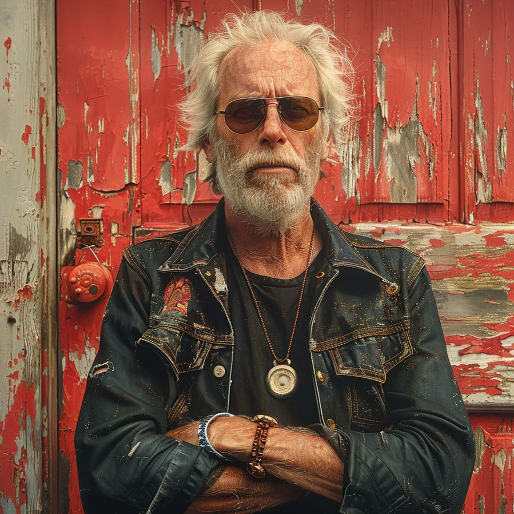

Marko Lindholm
21.08.2024

Päivämäärä: 12.4.2024
Diagnoosi: Noidannuoli (lumbago)
Kuvaus: Potilas hakeutuu hoitoon noston yhteydessä esiintyneen äkillisen alaselkäkivun vuoksi. Diagnoosina noidannuoli. Suositeltu kipulääkitys, fysioterapia ja lepo.